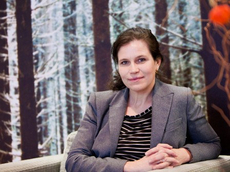

CV

ROTKIRCH, Anna Ullica. ORCID 0000-0002-9429-1499
Anna Rotkirch is Research Professor and Research Director at the Population Research Institute of Väestöliitto, the Family Federation of Finland. She served as demographic rapporteur to the Finnish Government in 2020–21 and in 2024, has published over 200 research articles and 20 academic and popular books, and currently directs "FINNÄT: Social networks in an ageing population" and co-directs "NetResilience: Social networks, fertility and wellbeing in ageing populations". Her research on family relations and the recent fertility decline has been featured in the Financial Times, BBC World News, The New York Times, The Economist, The Telegraph, Le Figaro, El País, Dagens Næringsliv, ARTE and other outlets.
Born in Finland. Citizenship: Finnish. Current residence: Helsinki, Finland.
Current position
Research Director and Research Professor, Population Research Institute, Väestöliitto, 2011–. Employed by Väestöliitto since 1 January 2007; Director from 1 August 2010; Professor from 1 September 2011.
Previous positions
2024 — Rapporteur on Demography, Finnish Government, June–September.
2020–21 — Senior Adviser and Rapporteur on Demography, Prime Minister's Office, Finnish Government, 1 May 2020 – 30 June 2021.
2010–11 — Academic visitor, Department of Social Policy and Intervention, St John's College, University of Oxford.
2007–09 — Senior researcher, Population Research Institute, Väestöliitto.
2004–06 — University lecturer, Department of Social Policy, University of Helsinki.
2002–04 — Research fellow, Collegium for Advanced Studies, University of Helsinki.
Research infrastructures and data
Responsible for enabling Finland's participation in, and securing funding for, the European research infrastructure Survey of Health, Ageing and Retirement in Europe (2016–2024), and — with Venla Berg — the Generations and Gender Survey from 2019 onwards. Producing the yearly representative Family Barometer surveys, made freely available for research at the Finnish Social Science Data Archive since 2008. Compiling the Global Fertility Preferences Database, Finnish Social Science Data Archive (May 2026).
Research funding (last five years)
2025–28 — Population projections for migration scenarios, human capital development and sustainable integration (MigScene), SKILLS programme, Strategic Research Council, Research Council of Finland. €1 470 000 for PRI; PI Wolfgang Lutz, WP4 PI Rotkirch. Second period 2028–31, €1.1 M for PRI.
2025–28 — Sociala nätverk i en åldrande befolkning (FINNÄT), Svenska litteratursällskapet, €600 000.
2023–25 — Towards a Resilient Future of Europe (FutuRes), consortium member, EU Horizon CL2, €180 000 for PRI.
2021–27 — Social Networks, Fertility and Wellbeing in Ageing Populations: Building Demographic Resilience in Finland (NetResilience), consortium co-PI and WP1 leader, Demography programme, Strategic Research Council, €864 659 for PRI.
2020–24 — The Network Dynamics of Ethnic Integration, consortium member, NordForsk, €110 100 for PRI.
2016–25 — Country leader for SHARE, a European Research Infrastructure Consortium, waves 7–10.
2018–23 — PI, Partnership and Family Dynamics in Old Age, Academy of Finland, €480 000.
2019–20 — PI, Digital Wellbeing in Families, Government Research Activities, €200 000.
2012–19 — co-PI, Generational Transfers in Finland longitudinal surveys.
Degrees
2001 — Title of Docent, University of Helsinki. 2000 — PhD in Social Sciences (Social Policy), University of Helsinki, eximia cum laude. 1994 — MA in Social Sciences, University of Helsinki, eximia cum laude approbatur. 1985 — Matriculation examination (six laudatur), Helsingfors Svenska Normallyceum.
Editorships
2025– Editorial board member, Population. 2025– Editorial board member, Vienna Yearbook of Population Research. 2010– Editor-in-chief, Finnish Yearbook of Population Studies, renamed Nordic Yearbook of Population Studies in 2025.
Positions of trust (last five years)
2009– Board member, Otto A. Malm Foundation; vice chair 2023–. 2021–24 Expert member, Riksbankens Jubileumsfond. 2018–23 Board member, University of Oulu; vice chair 2022–23. 2020– Steering group member, International Institute for Applied Systems Analysis (IIASA) Finland.
Doctoral supervision
Miika Mäki (2020–), determinants and outcomes of family life histories in Europe · Mirkka Danielsbacka (2016), grandparental care in Finland and Europe · Hans Hämäläinen (2016), altruistic helping in Finland · Venla Berg (2016), on the evolution of personality · Antti Tanskanen (2014), impacts of grandparenting in contemporary Europe · Anna-Maria Isola (2013), public discourses on fertility in Russia, Finland and Estonia · Päivi Mattila (2011), domestic labour relations in India.
Thesis examinations
2026 Maria Lyster Andersen, University of Oslo · 2026 Anni Tuominen, University of Helsinki · 2025 Agnes Fauske, University of Oslo · 2021 Alyce Raybould, London School of Hygiene and Tropical Medicine · 2017 Juan Du, University College London · 2016 Sarah Myers, University of Kent · 2016 Yuliya Hilevych, Wageningen University · 2015 Trond Viggo Grøntvedt, NTNU Trondheim · 2015 Zhanna Kravchenko, docent evaluation, Södertörn University.
Teaching
Twenty years of regular lecturing for professional, lay and academic audiences. Lecturing skills evaluated eximia cum laude at the University of Helsinki in 2001.
Other scientific duties
Chair of the organising committee, European Human Behaviour and Evolution Association Conference 2015; general secretary of the organising committee, European Sociological Association Conference 2001. Referee for journals including Journal of Marriage and Family, European Sociological Review, Acta Sociologica, PLOS ONE, Evolution and Human Behavior, Demographic Research, Population Studies, Emotion, Sociology and European Societies. Expert for funding bodies including the European Research Council (Advanced Grants), Riksbankens Jubileumsfond, the US National Science Foundation and NORFACE.